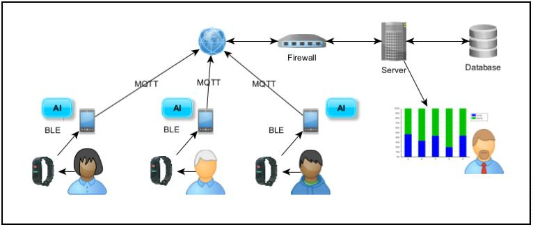
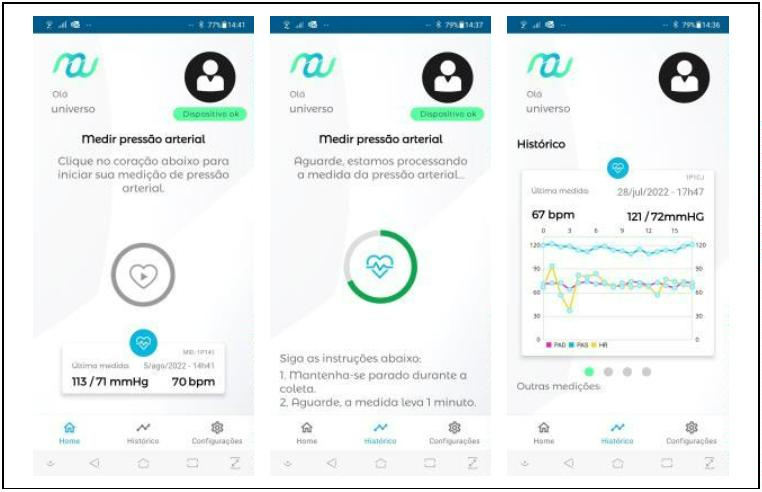
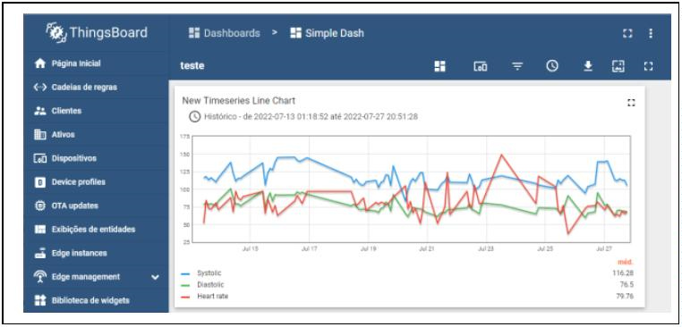
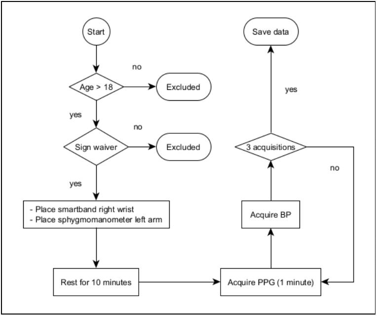

03 / Remote monitoring · InCor
RPMS
Remote Patient Monitoring System
Heart Institute (InCor), Hospital das Clínicas, University of São Paulo Medical School
Objective
Support patient follow-up outside the hospital by connecting wearable recordings to biomarkers available to the clinical team.
Project responsibility
My work covered collection protocols with prototype watches, data organization, photoplethysmography (PPG) preprocessing and collaborative algorithm development.
Engineering decisions
- Phone-based processing
- The watch sends PPG over Bluetooth Low Energy. The phone estimates blood pressure and heart rate and transmits results to the server, reducing transmitted data volume compared with raw signals.
- Collection protocol
- The published protocol interleaves three PPG recordings with cuff blood pressure measurements after rest. This creates signal and reference pairs for estimator evaluation.
- Participant-level validation
- Validation folds keep participants separate. This evaluates generalization to people who were not used for training.
How it works

The watch sends PPG to the Android app over Bluetooth Low Energy. The phone processes the signal, estimates blood pressure and heart rate, and sends results over MQTT to a ThingsBoard server. The dashboard displays each patient’s measurements over time.
Results and evaluation
The version described in the 2022 paper used data from 52 volunteers and supported remote monitoring with 15 wristbands. The app retained a local history and sent systolic pressure, diastolic pressure and heart rate estimates to the server.


Collection protocol and signal processing
In the 2022 protocol, volunteers rested for 10 minutes and completed three one-minute PPG recordings interleaved with cuff blood pressure measurements. Processing used a 0.5–10 Hz filter, resampling from 200 to 125 Hz and 8-second windows. Evaluation kept participants separate across validation folds.

Algorithms and research
RPMS research covers signal quality, blood pressure estimation, diabetes-related classification and sleep analysis. The papers document these areas. The 2022 architecture shown above integrates blood pressure and heart rate estimates.
Research references
- Moreno R, Dias F, Arruda M et al. IoT Medical Device Architecture to Estimate Non-invasive Arterial Blood Pressure. Symposium on Internet of Things (SIoT), 2022.
- Dias FM et al. Quality Assessment of Photoplethysmography Signals For Cardiovascular Biomarkers Monitoring Using Wearable Devices. arXiv · Preprint, 2023.
- Dias FM et al. Exploring the limitations of blood pressure estimation using the photoplethysmography signal. Physiological Measurement, 2025.
- da Silva Costa TB, Dias FM et al. Blood Pressure Estimation From Photoplethysmography by Considering Intra- and Inter-Subject Variabilities: Guidelines for a Fair Assessment. IEEE Access, 2023.
- Oliveira FAC, Dias FM et al. Machine Learning-Based Diabetes Detection Using Photoplethysmography Signal Features. SBCAS, 2024.
- Quino JAP, Cardenas DAC, Toledo MAF, Dias FM et al. Enhancing Photoplethysmography-Based Sleep Staging Models Through Temporal Context Optimization. Studies in Health Technology and Informatics, 2025.